Contents
Getting Started Start a new group Join with an invite code The Dashboard Group Setup (Admins) Invite your crew Add golfers Add courses Quick Rounds Best Ball Rabbit Wolf Rolling Skins Tournaments (Admins) Entering Scores Handicaps Explained History My AccountGetting Started
Sandbagger is built around groups — your golf crew. One person starts the group and becomes its admin; everyone else joins with an invite code. You only do this once.
Start a new group
If you're the organizer, create the group. You'll automatically be its admin — that means you can add golfers and courses, create tournaments, and manage rounds.
- Open the app. On the sign-in screen, tap Sign up.
- Choose 🏌️ Start a new group.
- Fill in your name, email, and a password (8+ characters).
- Give your group a name — this is what your whole crew will see.
- Enter your Handicap Index if you know it (you can change it any time). Not sure what this is? See Handicaps Explained.
- Tap Create Group — you'll land on your new dashboard, signed in and ready to go.
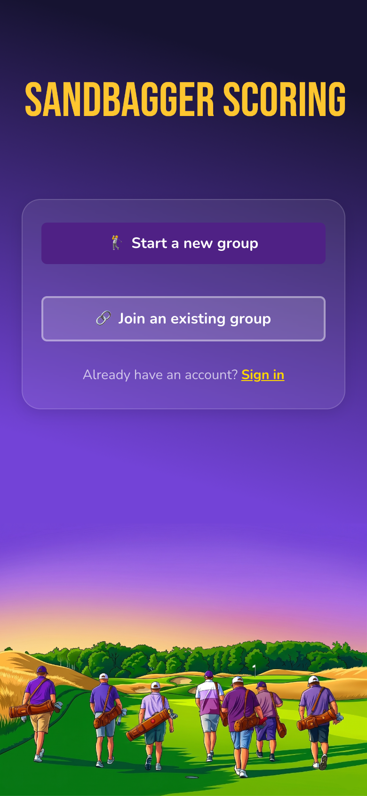
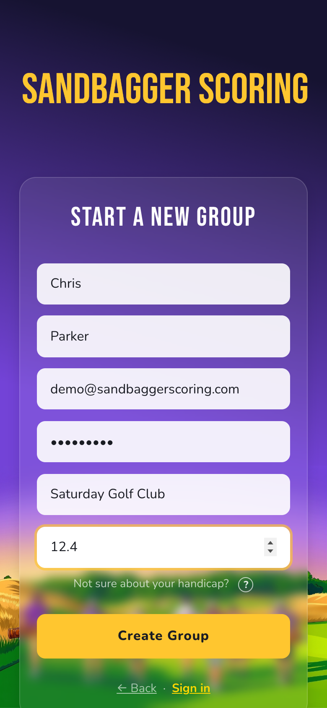
Join an existing group
Already have a crew using Sandbagger? Ask your group's admin for the invite code (or invite link), then:
- On the sign-in screen, tap Sign up → 🔗 Join an existing group.
- Enter the invite code. When it's valid, the group's name appears with a green check — so you know you're joining the right crew.
- Fill in your name, email, password, and (optionally) your Handicap Index.
- Tap Join Group.
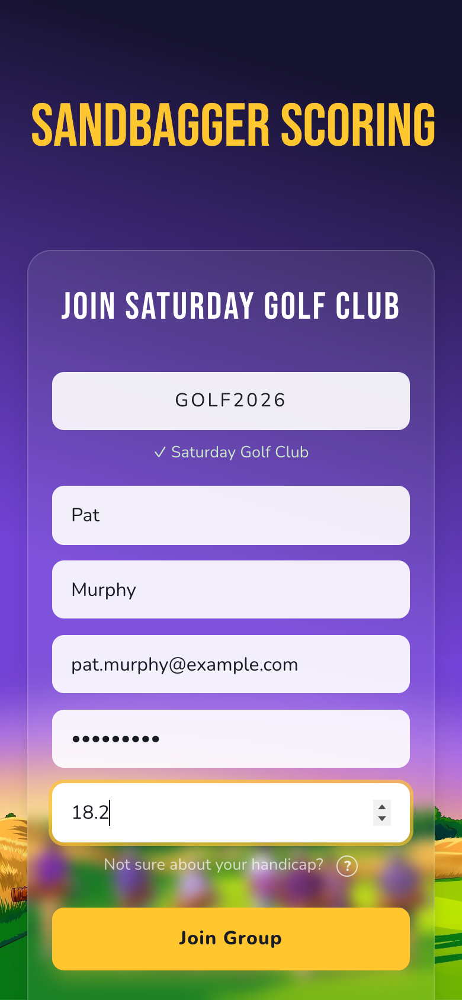
Signing in later
Use the email and password you registered with. The app keeps you signed in on your phone, so day-to-day you'll skip this screen entirely.
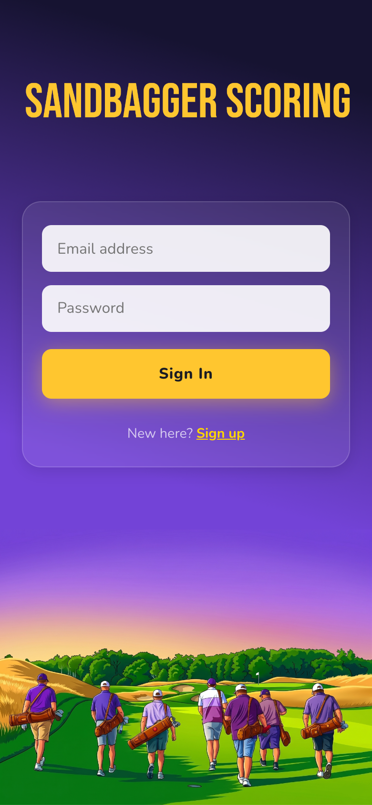
The Dashboard
Home base. Everything starts here: live rounds you can jump back into, your tournaments, and the buttons to start something new.
What you'll see
- Current Matches — active tournaments and any in-progress quick rounds, each with a Resume button. Tap a round to open its scoreboard right where you left off.
- New Matches — + New Quick Round for a casual game today, and (admins only) + New Tournament for multi-round events.
- Setup checklist — brand-new groups get a short checklist (add golfers, add a course, create a tournament). It disappears once you're set up.
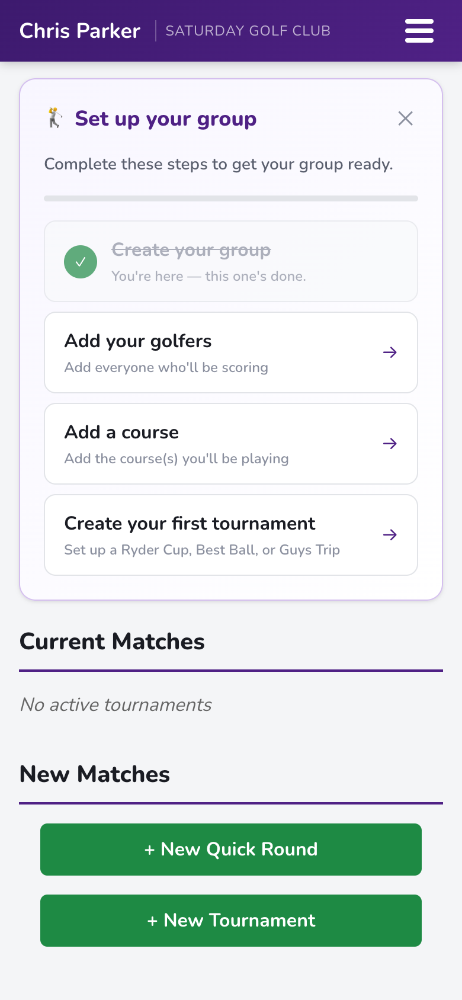
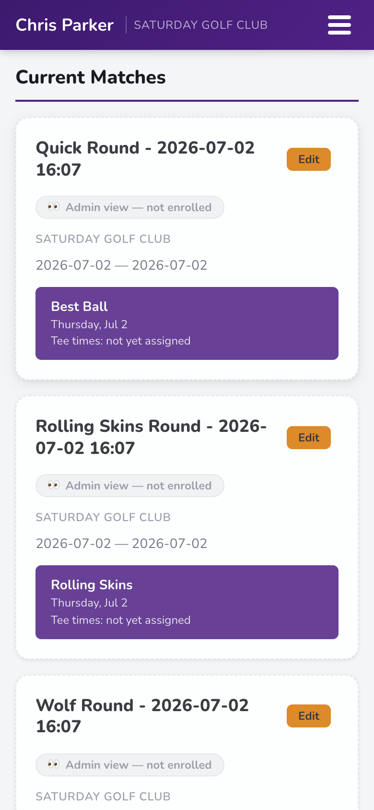
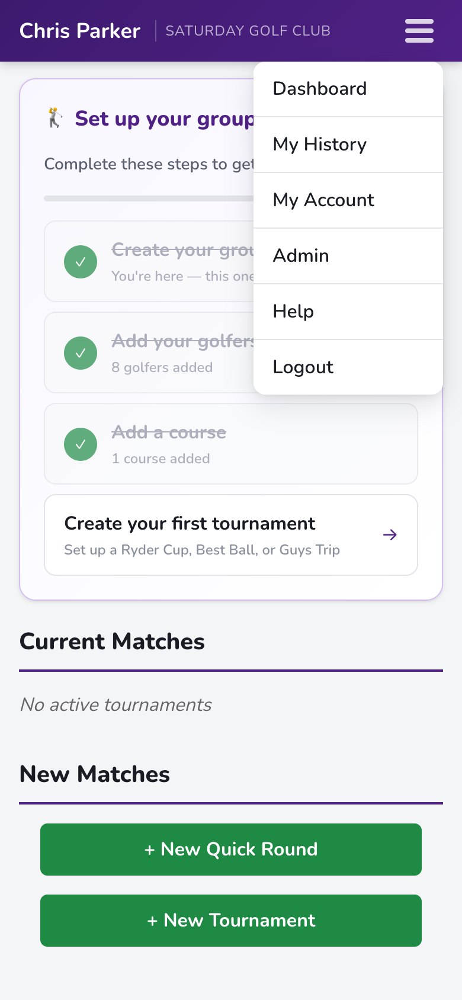
The menu
Tap the ☰ button (or your name) in the top bar:
| Dashboard | Back to home base from anywhere. |
| My History | Every round you've played, with scorecards. |
| My Account | Profile, handicap, groups, password. |
| Admin | Group management — admins only. Golfers, courses, invites. |
| Help | Built-in explanations of formats and handicap terms. |
Group Setup (Admins)
Before the first round: add your golfers, add the course you're playing, and invite the crew. All of this lives under ☰ → Admin.
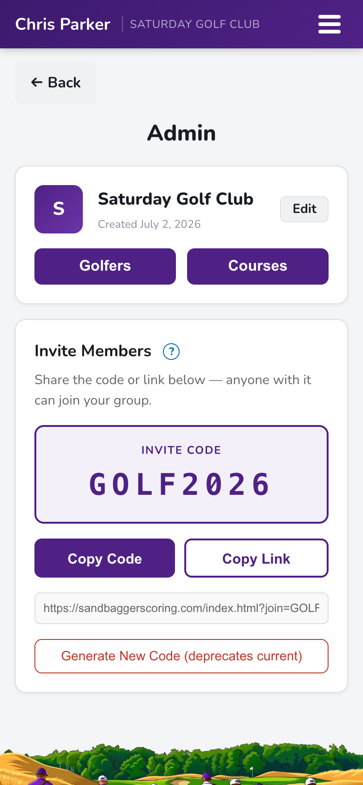
Invite your crew
Your group has one invite code, shown right on the Admin page. Anyone with the code (or link) can join your group.
- Open ☰ → Admin.
- Tap Copy Code or Copy Link and share it in your group chat.
- Each buddy signs up with it — see Join an existing group.
Add golfers
Add everyone who'll be playing — even buddies who haven't downloaded the app yet. You can enter scores for them, and they show up in tournaments and quick rounds like anyone else.
- Go to ☰ → Admin → Golfers.
- Tap + Add Golfer, enter their name and Handicap Index, and save.
- Golfers marked Pending haven't created an account yet. When they join with your invite code, they claim their profile — scoring history included.
- Use Edit to update a golfer's handicap any time.
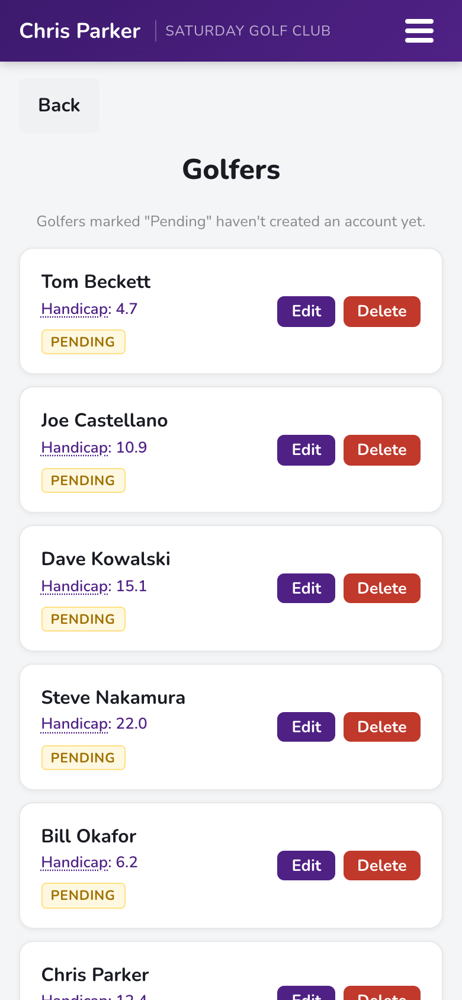
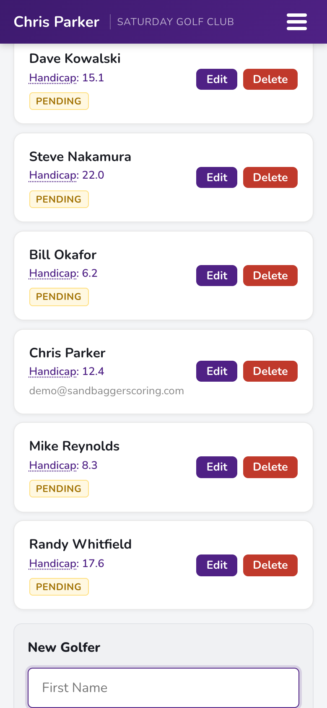
Add courses
Sandbagger needs the course's scorecard — par, handicap index (stroke ratings) per hole, and tee data (slope/rating) — to calculate playing handicaps correctly. Add each course you'll play once; it's saved for the whole group.
- Go to ☰ → Admin → Courses.
- Tap + Add New Course and enter the course details, tees, and hole-by-hole scorecard info.
- Add every tee your group plays — each player's handicap adjusts to the tee they're playing.
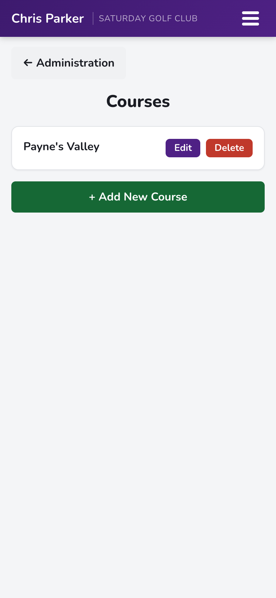
Quick Rounds
A quick round is exactly that — pick a game, pick the players, and tee off. No tournament setup required. Anyone in the group can start one.
| Format | The game |
|---|---|
| Best Ball | 2v2 — each side counts its best net score on every hole. |
| Rabbit | Win a hole outright to catch the rabbit; hold it when the 9 ends to win. |
| Wolf | Rotating Wolf picks a partner after tee shots — or goes lone wolf for more points. |
| Rolling Skins | Win a hole outright for the skin; ties roll the value onto the next hole. |
Starting a quick round
Every format starts the same way:
- On the dashboard, tap + New Quick Round.
- Choose your game from the list and tap Continue. (Tap the ? for a refresher on any format's rules.)
- Pick the players — 2v2 teams for Best Ball, four individuals for the rest.
- Pick the course and the tees you're playing.
- Choose your handicap settings (use the group's calculated handicaps, or set them manually for today).
- Tap Start Round — the live scorecard opens, and the round appears on everyone's dashboard under Current Matches.
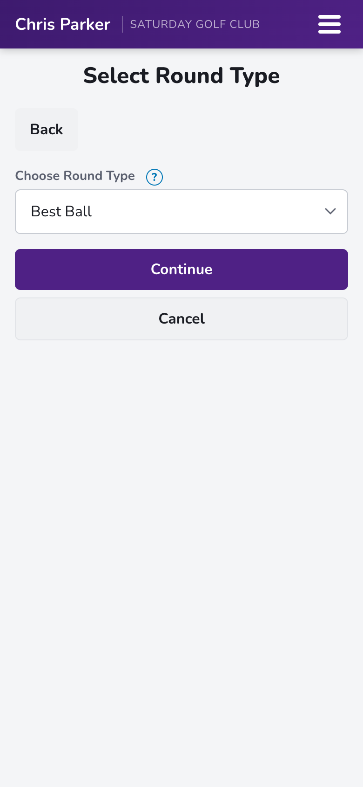
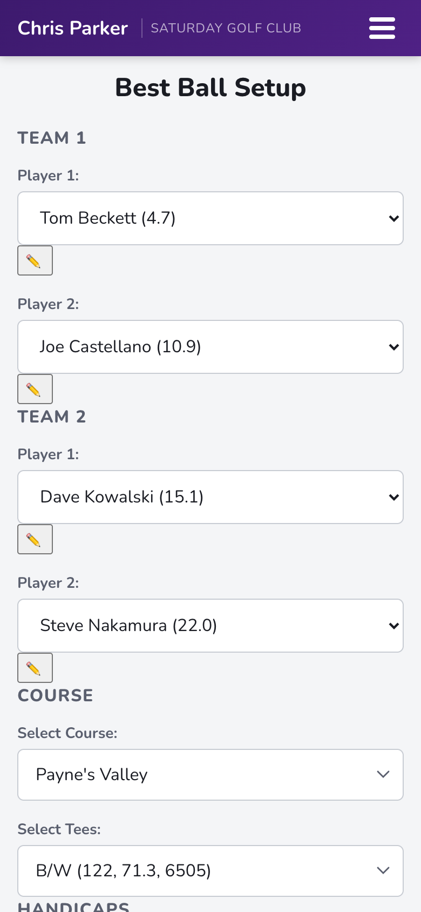
Best Ball (2v2)
Each hole, both players on a team play their own ball; the team's score is its best net ball. The scorecard's left edge tracks the match: the color shows who's up, the number shows by how many.
Reading the card: dots in a cell mark handicap strokes received on that hole. Cell colors flag birdies (blue), pars (gray), and bogeys+ (red) at a glance.
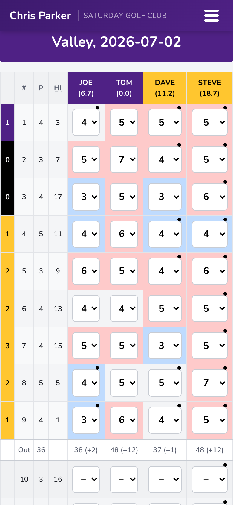
Rabbit
Win a hole outright (lowest net, no ties) to catch the rabbit. Whoever holds the rabbit when the 9th and 18th holes finish wins that side. Tie a hole and the rabbit stays put; win one while someone else holds it and it goes free first. The card shows the rabbit's status as the round unfolds.
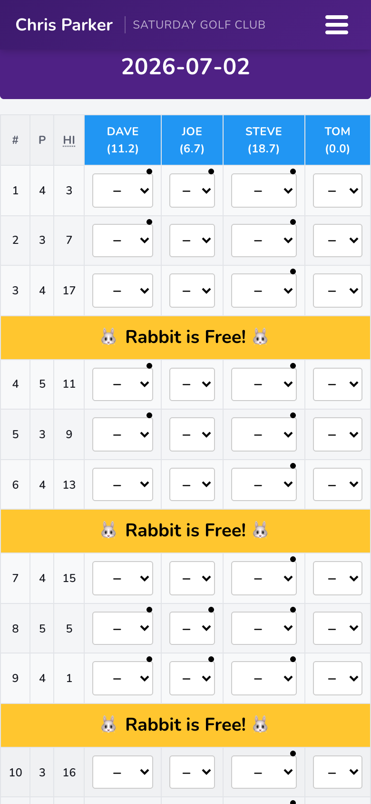
Wolf
The 🐺 rotates every hole (tee order). After watching tee shots, the Wolf either picks a partner for a 2v2 hole — or goes Lone Wolf against the other three for triple the points. Use the Partner column to record the Wolf's choice each hole, then enter scores normally; Sandbagger handles the points.
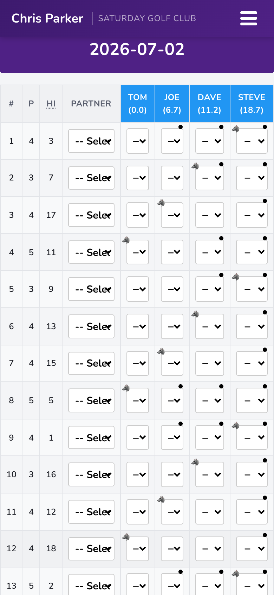
Rolling Skins
Every hole is worth one skin. Win the hole outright (lowest net) and it's yours; tie, and the skin rolls — the next hole is now worth two. The live summary under the scorecard shows skins won and a hole-by-hole breakdown, including carries.
- Enter gross scores; the summary recalculates instantly.
- When all 18 holes are in, tap Finalize Round at the bottom — the round locks and moves to your group's history.
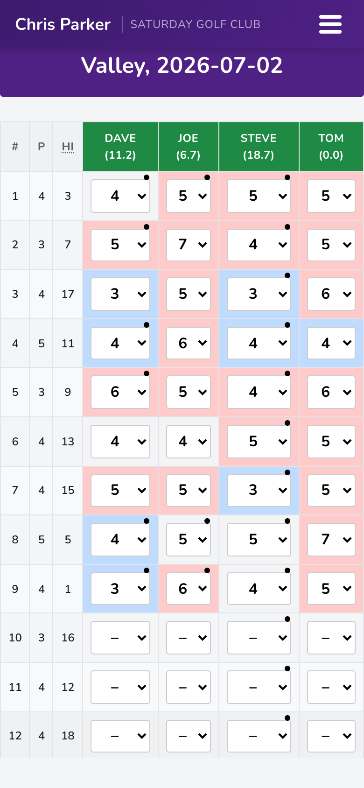
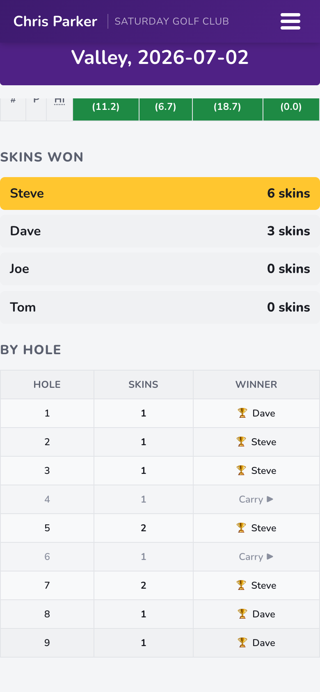
Pausing & resuming
Quick rounds live on your dashboard until they're finalized. Close the app at the turn, grab a hot dog, reopen — your round is right there under Current Matches.
Tournaments (Admins)
Tournaments are multi-round events with rosters, teams, tee times, and standings — built for the annual trip. Only admins create and manage them.
| Format | The event |
|---|---|
| Ryder Cup | Two teams, match-play points across multiple rounds. |
| Guys Trip | 2v2 partnerships each round with team points. |
| Stroke Play | Individual + team best ball standings from grouped tee times. |
| Scramble | Each foursome plays one team ball; lowest team score wins. |
Create the tournament
- On the dashboard, tap + New Tournament.
- Name it, set the start and end dates, and choose the Handicap % (80% is a common trip setting — see Handicaps Explained).
- Pick the format and tap Continue.
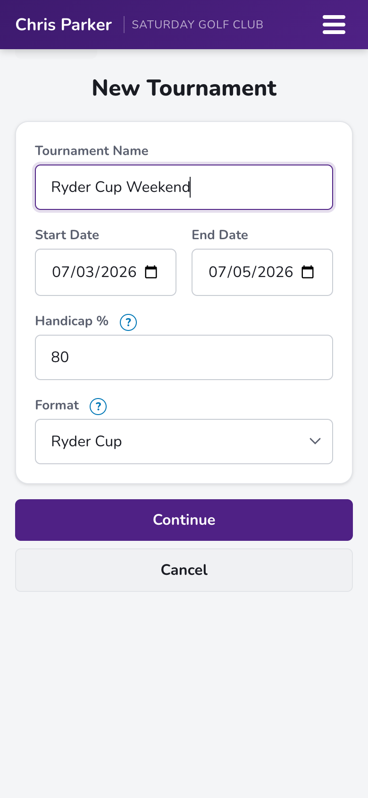
Teams & players
Ryder Cup: name your two teams and pick their colors, then assign every golfer to a side with one tap. Those colors follow the teams everywhere — scorecards, leaderboards, the big scoreboard.
Guys Trip / Stroke Play / Scramble: simpler — just check off who's playing and create.
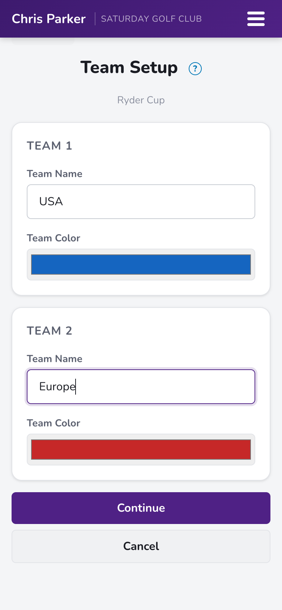
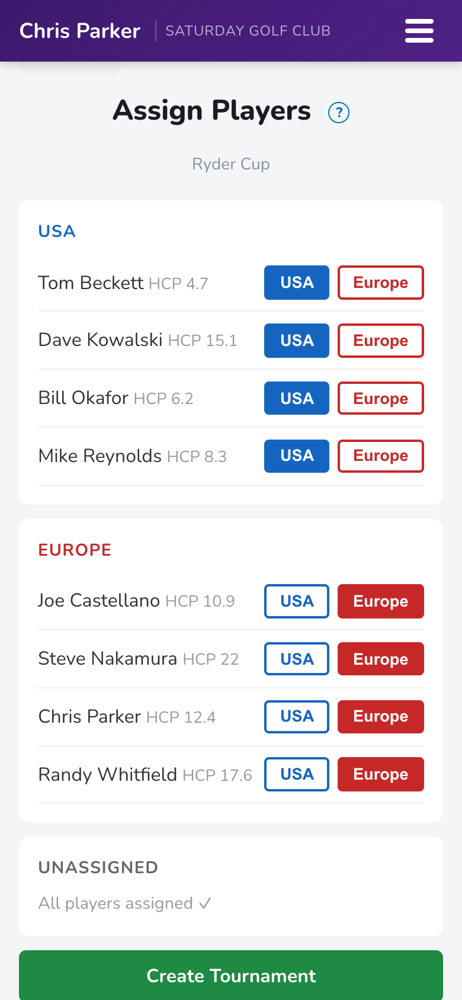
Your new tournament appears on everyone's dashboard, with its rounds listed on the card:
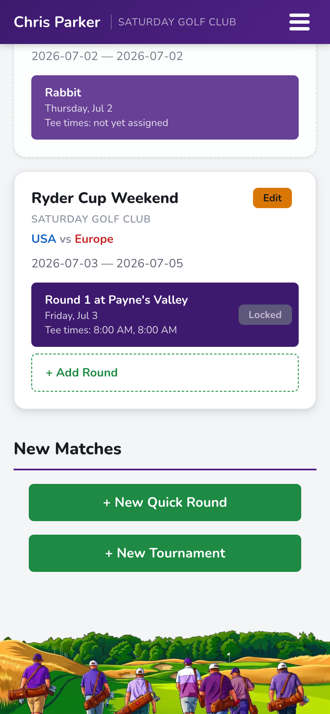
Add a round
- On the tournament card, tap + Add Round.
- Pick the date, course, and tees, then tap Continue to Matches. (You can also save the round bare and set up matches later.)
- Build the day's matches — for Ryder Cup, each match is 2v2 with a player from each team's roster. Stroke Play and Scramble use foursome groups instead.
- Tap Continue to Tee Times, add your tee times, and slot each match into one.
- Tap Save Round. Done — the round shows on the tournament card with its tee times.
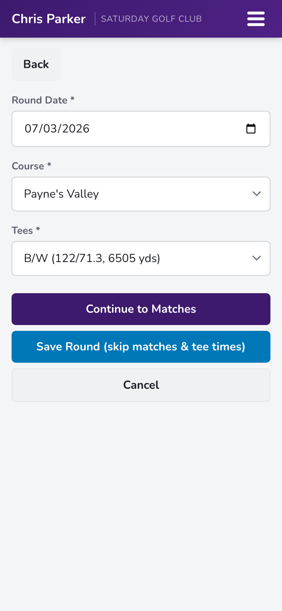
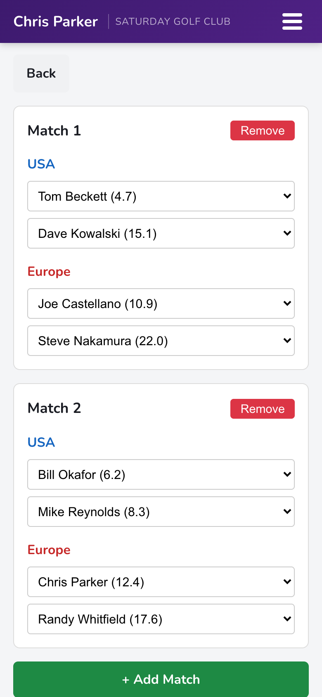
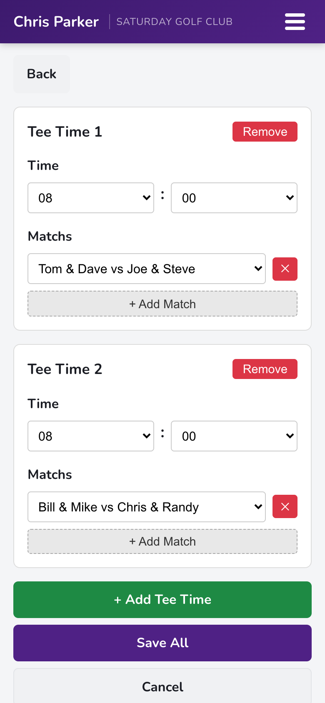
Entering Scores
One person per foursome (or everyone — it's up to you) enters gross strokes hole by hole. Sandbagger applies handicaps and updates every leaderboard live. Tournament rounds have three tabs: My Match, Round, and Tournament.
My Match — enter your scores
Open the round from the dashboard and you land on your own match's scorecard. Enter each player's gross strokes from the dropdowns — that's the whole job.
- Dots mark holes where a player gets handicap strokes (two dots = two strokes).
- Cell colors flag the score vs. par: birdie-or-better (blue), par (gray), bogey+ (red).
- The left edge tracks the match hole by hole — the color is the leading team, the number is the margin.
- Scores save instantly; everyone viewing the round sees them live.
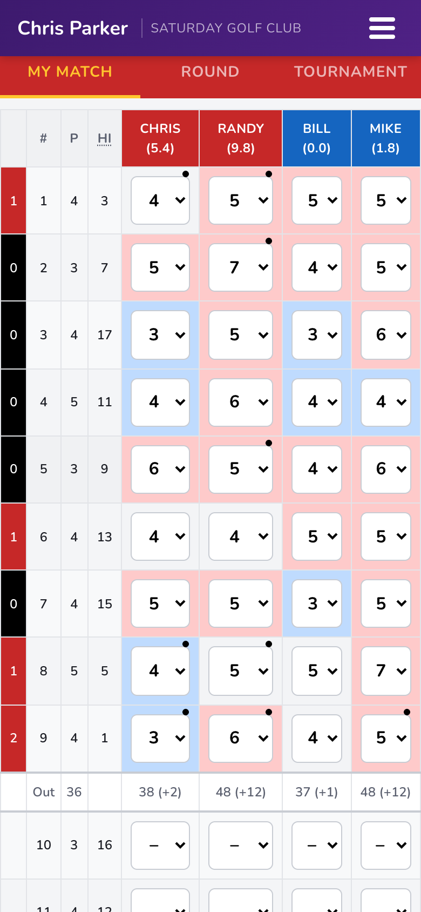
Round — today's action
The Round tab shows every match in today's round with its live status, plus the round leaderboards (gross and net) and any skins on the line. Tap a match to see its full scorecard.
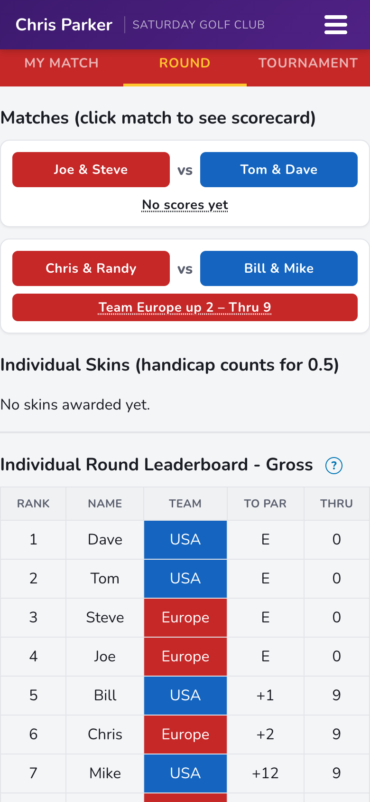
Tournament — the big picture
The Tournament tab is the trip scoreboard: team points up top (Ryder Cup), every round's matchups and tee times, and the tournament-long leaderboards.
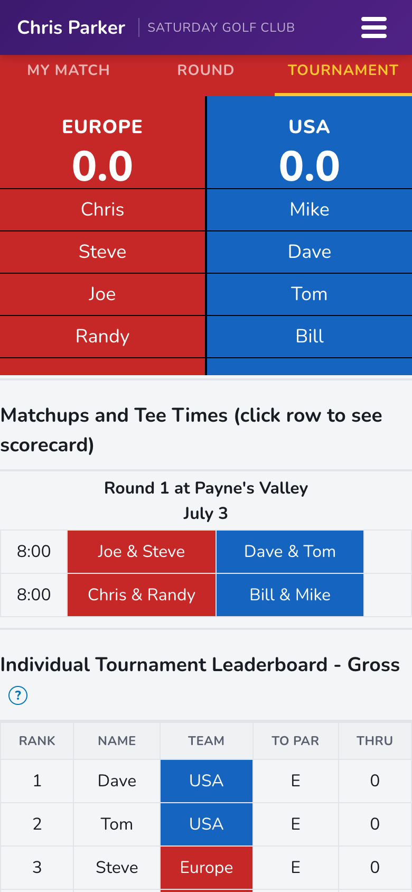
Handicaps Explained
This is Sandbagger's whole reason for existing: different players, different tees, different courses — one fair game. Here's the vocabulary in plain English.
| Handicap Index | Your portable skill number (e.g. 12.4). Set it in My Account, or the admin can set it for you. Update it as your game changes. |
| Playing Handicap | What you actually get today: your index adjusted for the tees you're playing (slope/rating) and the event's Handicap %. Shown next to each name on the scorecard. |
| Handicap % | How much of the full handicap the event uses. 100% = full strokes; 80% is a common trip setting that keeps things competitive without giving the high-handicapper the keys. |
| Stroke Index (HI column) | The course's 1–18 difficulty ranking. Strokes are given on the hardest holes first — a 5-handicap strokes on the 5 hardest holes. |
| Stroke dots | Dots in a scorecard cell mark holes where that player receives strokes (two dots = two strokes). Net score = gross − dots. |
| Gross vs. Net | Gross is strokes taken; net is gross minus handicap strokes. Leaderboards show both — bragging rights settled either way. |
In head-to-head games
In quick-round matches, handicaps play relative to the low man — the lowest playing handicap in the game plays at 0 (scratch) and everyone else gets the difference. That's why the best player in your foursome shows (0.0) on the card.
Calculated vs. manual
Quick rounds normally calculate playing handicaps from each player's index. Prefer to set today's strokes by hand — grudge-match style? Choose Manual Handicaps in the round setup and type them in.
Locking handicaps for a tournament
Indexes drift; tournaments shouldn't. On the tournament's Edit page, tap 🔒 Lock Handicaps for Tournament to freeze everyone's handicap for the event — later index updates won't change the trip's math. Locked values that differ from a player's current index are highlighted so the commissioner always knows.
History
Every round and tournament is preserved — scorecards, results, and standings.
- Open ☰ → My History.
- You'll see every tournament and quick round you've played, newest first.
- Tap any card to reopen it — finalized rounds open as read-only scorecards with the final results; tournaments open to their standings.
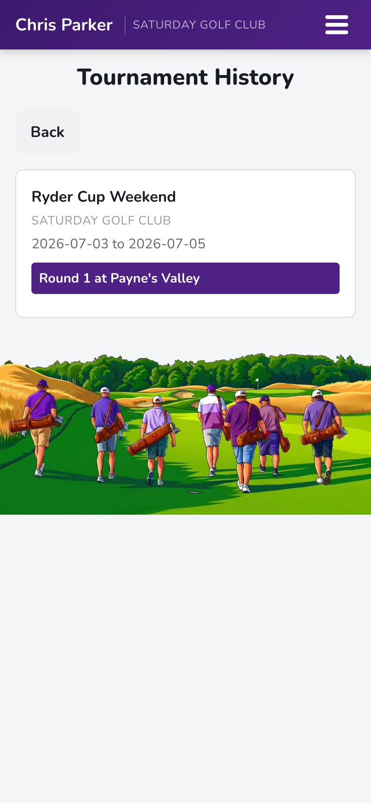
My Account
Your profile, your handicap index, your groups, and your credentials — all under ☰ → My Account.
- Edit Profile — update your name, email, or Handicap Index.
- Change Password — what it says on the tin.
- My Groups — every group you belong to. Join another with an invite code, or create a brand-new group (you'll be its admin).
- In more than one group? Tap the group name in the top bar to switch between them any time.
- Delete Account — permanently removes your login and personal info immediately. Scores you recorded stay in your groups' shared history, unlinked from you. Details at the account deletion page.
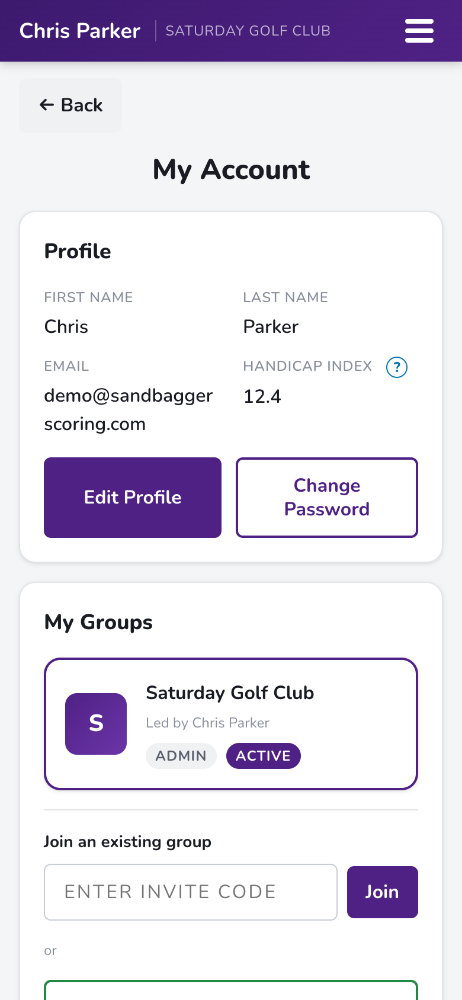